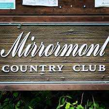
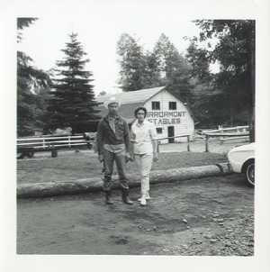

Discover Mirrormont
As of the census of 2000, there were 3,804 people, 1,330 households, and 1,110 families residing in the CDP. The population density was 367.3 people per square mile (141.8/km2). The racial makeup of the CDP was 94.03% White, 0.45% African American, 0.58% Native American, 1.37% Asian, 0.13% Pacific Islander, 0.81% from other races, and 2.63% from two or more races. Hispanic or Latino of any race were 1.68% of the population.

There were 1,330 households, out of which 39.4% had children under the age of 18 living with them, 76.6% were married couples living together, 4.0% had a female householder with no husband present, and 16.5% were non-families. 12.2% of all households were made up of individuals, and 2.7% had someone living alone who was 65 years of age or older. The average household size was 2.81 and the average family size was 3.05. In the CDP the population was spread out, with 26.9% under the age of 18, 4.8% from 18 to 24, 27.9% from 25 to 44, 32.5% from 45 to 64, and 7.8% who were 65 years of age or older. The median age was 41 years. For every 100 females there were 103.7 males. For every 100 females age 18 and over, there were 100.8 males.
The median income for a household in the CDP was $87,945, and the median income for a family was $90,413. Males had a median income of $70,365 versus $38,929 for females. The per capita income for the CDP was $35,200. About 3.1% of families and 5.7% of the population were below the poverty line, including 6.3% of those under age 18 and 4.5% of those age 65 or over.
Number of Visits: